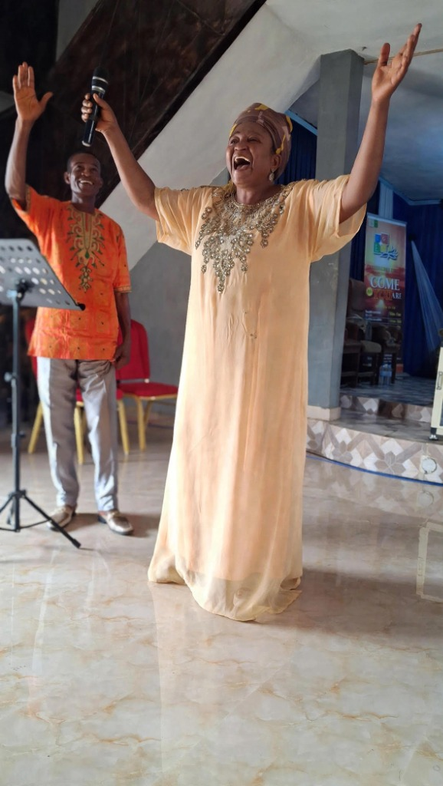

Who We Are
Growing People Through the Grace of the Lord Jesus Christ
Our Senior Pastor

Pastor Justina Eze
Senior Pastor, Greater Grace Embassy Church Int'l
Greater Grace Embassy Church International is a Christ-centered ministry led by Pastor Justina Eze, with a passion for seeing lives transformed by the unmerited grace of our Lord Jesus Christ.
Under her spiritual leadership, the church is dedicated to building strong faith, proclaiming the finished work of Christ, restoring hope to families, and equipping believers to walk in supernatural victory.
Through the preaching of the Gospel, fervent prayer, worship, and expository teaching, we create an environment where everyone can encounter God, grow spiritually, and fulfill their God-given destiny.
Our divine mandate: "To see Jesus and His finished, perfect work on the cross, and to make Him known through the preaching of the Gospel."
Our Mission
To grow people through the grace of our Lord Jesus Christ.
We are committed to helping people grow spiritually, deepen their relationship with Christ, understand God's Word, and live confidently in the grace God has made available through Jesus Christ.
Our Vision
To raise champions of faith, restore hope, and demonstrate the supernatural power of God in everyday life.
We envision a people who are firmly rooted in Christ, strong in faith, full of hope, and equipped to reflect God's power and love wherever they go.
Our Mandate
To see Jesus and His finished, perfect work on the cross, and to make Him known through the preaching of the Gospel.
Everything we do flows from this mandate. We desire to continually point people to Jesus and the victory, salvation, freedom, and new life found in His finished work.
What We Believe
At Greater Grace Embassy Church International, our faith is centered on Jesus Christ and the Word of God. We believe that the Gospel is the good news of God's grace and that the finished work of Christ is the foundation of our faith and our relationship with God.
We Believe:
- The Bible is the Word of God and the foundation for our faith, life, and conduct.
- Jesus Christ is the Son of God, Lord and Savior, and the only way to the Father.
- Jesus died for our sins and rose again, accomplishing a complete and perfect work of redemption on the cross.
- Salvation is by God's grace through faith in Jesus Christ, not by human works.
- The Holy Spirit is active in the life of the believer, empowering, guiding, teaching, and transforming us.
- Prayer and worship are essential to our relationship and fellowship with God.
- Every believer is called to grow spiritually, walk by faith, and live out the life of Christ.
- God's supernatural power is still at work today, bringing hope, transformation, healing, restoration, and purpose.
- The Gospel of Jesus Christ should be made known, so that people everywhere may encounter His grace and experience new life in Him.
Our Core Values
Our core values shape how we serve God, relate to one another, and represent Christ in our everyday lives.
1. Serve with a Graceful Heart
We serve God and others with humility, joy, compassion, and a heart that reflects the grace we have received through Christ.
2. Love One Another as Christ Loved Us
We are committed to showing genuine love, kindness, forgiveness, unity, and care for one another, following the example of Christ.
3. Have an Excellent Spirit
We pursue excellence in our walk with God, our service, our character, and everything entrusted to us, giving our best for the glory of God.
Our Heart
We are a church where Jesus is the center, grace is the foundation, faith is our response, and the Gospel is our message.
Our desire is to see people encounter Christ, grow through His grace, become champions of faith, restore hope, and make Jesus known in their generation.